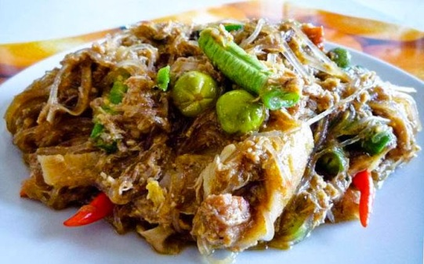
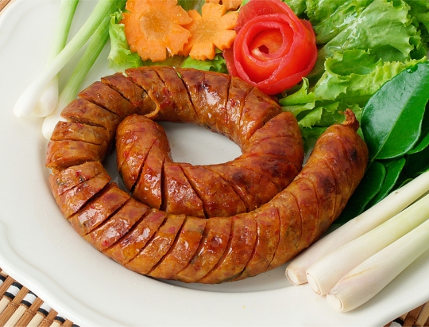
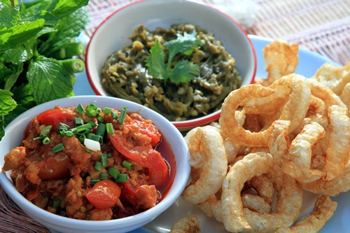

อาหารของภาคเหนือ ประกอบด้วยข้าวเหนียวเป็นอาหารหลัก มีน้ำพริกชนิดต่าง ๆ เช่น น้ำพริกหนุ่ม น้ำพริกอ่อง มีแกงหลายชนิด เช่น แกงโฮะ แกงแค นอกจากนั้นยังมีแหนม ไส้อั่ว แคบหมู และผักต่าง ๆ สภาพอากาศก็มีส่วนสำคัญที่ทำให้อาหารพื้นบ้านภาคเหนือแตกต่างจากภาคอื่น นั่นคือ การที่อากาศหนาวเย็นเป็นเหตุผลให้อาหารส่วนใหญ่มีไขมันมาก เช่น น้ำพริกอ่อง แกงฮังเล ไส้อั่ว เพื่อช่วยให้ร่างกายอบอุ่น อีกทั้งการที่อาศัยอยู่ในหุบเขาและบนที่สูงอยู่ใกล้กับป่า จึงนิยมนำ | |
|  | |
| แกงโฮะ | |
|---|---|
|  | |
| ไส้อั่ว | |
|  | |
| น้ำพริกหนุ่ม แคบหมู | |